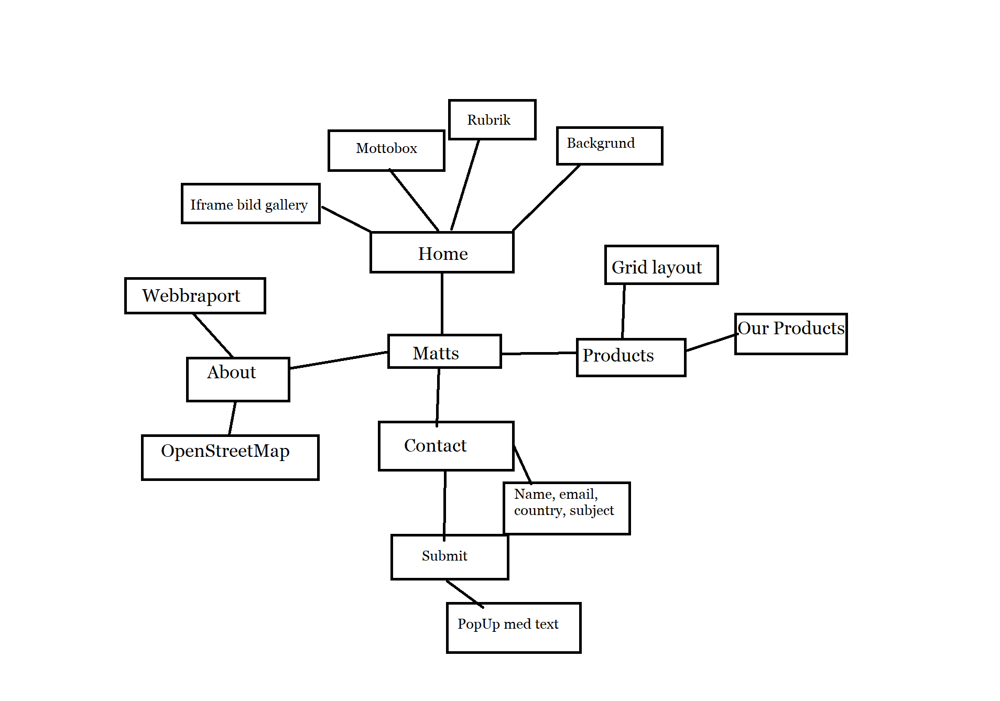
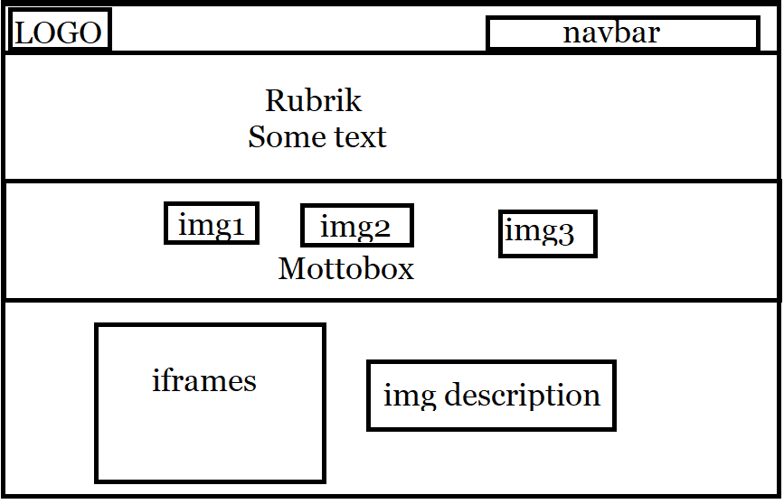

Specifikationen:
Webbsidan Matts är en sajt där man kan köpa delar till olika motorcyklarnas hastighetsmätare. Målgruppen för webbsidan är motorcykelägare som vill ha ordentliga och hållbara delar. Syftet med Matts är att vara en bra shop-page och lätt navigerbar för kunden. Responsiviteten på webbsidan är lagad bara för mobil, tablet och datorskärmar eftersom det är en web-shop.
MindMap:
Plan:
Web Rapporten:
Strukturen med vår webbsida var ganska lätt att få igång för vi hade samma synvinklar hur vi ville att webbsidan ser ut. Stilen kom med tiden när man koda framåt så ville man små justera och man fick nog på hur det såg ut. Det som var svårast vad att få webbsidan att vara responsiv till mobilen, för man hamnar hela tiden justera på allt möjligt att få det och se vettigt ut. Iframes galleriet var också ett litet strul men det löste sig ganska snabbt genom att bara prova på allt man hade lärt sig. Kartat samt CSS- animeringen var underligt lätta för det var bara en linje av kod man satt , kartan fick man lätt från OpenStreetMap.
Fredriks åsikt:
På grund av förra utbildningen som datanom i Prakticum så var denna kursen mera repetition än lärande men ändå nödvändig och bra. Det var lätt att följa med på lektionerna fast man arbetade på sitt eget projekt samtidigt. Att ha fått samarbeta på detta projekt var roligt för man fick lite tänka på vad man ville lägga upp på sin webbsida och nya idéer kom hela tiden fram, man ville lite lägga nytt hela tiden. Enda nackdelen med att samarbeta var att hitta tid då båda var lediga och kunde jobba utanför lektionerna. Att bara använda html och css att bygga upp webbsidan satt mycket med begränsningar på idéer och man ville lägga mer andra kodspråk till exempel php och Javascript som inte hörde till kursen.
Jockes åsikt:
Även jag är en utexaminerad programutvecklare från Prakticum, så inget från denna kursen var direkt nyheter för mig. Jag är mycket bekväm med Javascript och har arbetat mycket med det sedan tidigare, så det var riktigt roligt att leka lite med igen. Jag anser, som Fredrik, att det svåra med att skapa hemsidor är att få hemsidan att se vettig ut på alla enheter. Jag skulle lätt få mycket att fungera med bland annat Javascript och någon framework som är skräddarsytt för ändamålet, men eftersom kursen inte var i Javascript så försökte vi lösa så mycket som möjligt med ren html/css. En annan svår sak är att hålla css-filen städad, då man är två som samarbetar på ett projekt så blir det lätt mycket rester kvar från gamla experiment i filerna. Om man levererade detta till en riktig kund hade man förstås först städat upp i filerna, tagit bort onödiga kommentarer, gammalt skräp osv. Tanken var att skapa hemsidan i mera av ett webapp-utförande, genom att med javascript ladda in innehåll i div containrar på index sidan. Det skulle betyda att sidan inte “blinkar till” då man förflyttar sig med hjälp av nav-baren. Det visade sig dock vara en dålig idé eftersom att hemsidan inte hade fungerat i webbläsare som inte stöder Javascript. Hemsidan hade absolut blivit mer komplett om man hade lagt ner lite fler timmar på den. Nu har vi absolut inte arbetat på den så mycket som vi kunnat. Själv är jag inte van vid att samarbeta på den här typen av projekt, och brukar kanske prestera bättre om jag arbetar på egen hand. Vid samarbete är det otroligt viktigt att ha en klar och tydlig plan för hur saker och ting ska gå till, och vilka standarder man skall följa.